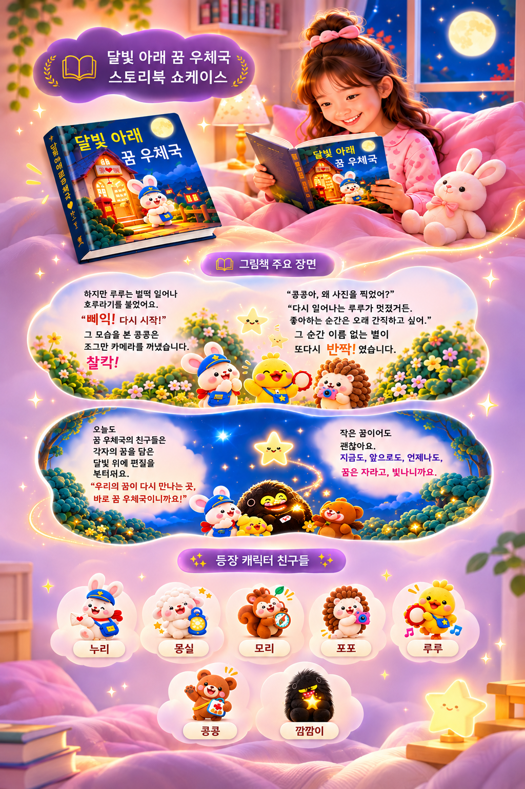

01
기획의도
달빛 아래 펼쳐지는 꿈 우체국 이야기를 통해 아이들에게 꿈과 희망, 따뜻한 마음을 전하는 창작 동화책을 제작한다.
AI CONTENT / PROJECT 03
달빛 아래 펼쳐지는 꿈과 희망의 이야기, 어린이를 위한 창작 동화책
달빛 아래 펼쳐지는 꿈 우체국 이야기를 통해 아이들에게 꿈과 희망, 따뜻한 마음을 전하는 창작 동화책을 제작한다.
어린이들이 흥미를 느끼면서도 이야기의 교훈과 감정에 자연스럽게 공감할 수 있는 동화 콘텐츠가 필요하다.
귀여운 캐릭터와 따뜻한 색감의 3D 그림, 환상적인 달빛 세계관을 활용해 상상력과 감성을 자극하는 그림책으로 제작한다.
